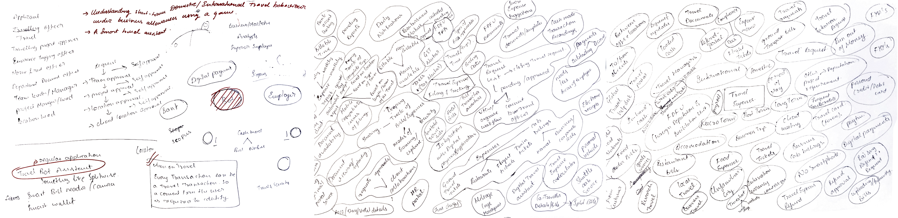

Pepper
What's this work about?
Bob & Team at Xerox PARC had a strong feel that people started reading computer screens more than papers.
They felt taking computer technology to office will make them more productive and so they invented the world’s first GUI which includes the evolution of pointing by a mice. This later inspired Apple Lisa, Macintosh & most GUI that we use now.
Digital workplaces & Smart technologies allow employees to lower the dependence on physical work processes enabling new and more effective ways of working. This helps the organisations to scale better.
But what drives a Digital Workplace?
It is also a way to empower employees to benefit their business abilities, to engage with their customers and promote a digital & smart work culture.
GOAL OF MY STUDY
To help employees of corporate world automate their expense filing & tracking when they are travelling and leverage their business abilities for customer engagement.
I began by identifying four strategic objectives that should result from the user research:
Make Business expenses reporting a convenient process
Make expense reimbursement process transparent & more efficient
Eliminating different focus layers for the employee in the travel allowance process
Make the expense filing system smart assisted to every individual
Whom did I interview?
Ganesh
• Frequent Short Term traveller
• Was on a Long Term deputation for 2 years
Harish
• Travels mostly on micro terms
• Spent personal money for business travels and reimbursed at times
What were my research objectives?
• What are the processes that travel teams at organisations are currently employing?
• What are the digital tools that users are leveraging for filing expenses?
• What can be done to enable smooth & simplified reimbursement?
• What are the most painful areas while remitting or refunding?
• Why are companies asking for travel settlements?
• What are the safest methods used to secure billing documents?
• What influences users to save & document bills & invoices?
• What are the alternatives present for recording cash mode transactions?
• What are the problems involves with not sharing bills & expenses?
• How is the overall experience of travel remittance & reimbursement?
Research findings & Insights
“I have to submit all the bills in an envelope at the end of each month.”
PROCESS & GOVERNANCE
Digitisation - The process clearly needs a smart & digital documenting system to reduce the effort of collecting and enveloping the bills.
“As I know that I can reimburse Rs.600 per day I’ll start spending more than required on each day”
BEHAVIOURAL CHANGE
Refund Limit - Organisations are allowing the employees of every role to avail upto a certain frequency limit or less than that.
“ I realised that I can avail medical claims internationally also after chucking my medical bill when I was in Australia”
WAYFINDING
Employees doesn’t really know to find the FDFU Documents & bills required for submission.
“When you guys went to Singapore you booked an airbnb because you guys thought the 3-start hotel provides costly services.”
ORIENTATION
Employees sendup booking their own accommodation thinking the accommodation suggested by the employer is high end.